第 16 章 Controller 场景¶
本章目标
- 会从 VuGen 或开始菜单新建场景，把第 15 章的 shop_order 放进去；
- 认得设计视图的三块：场景组、场景计划、服务水平协议；
- 会设置虚拟用户数和加压计划，能把第 13 章的几种测试类型配成对应的计划；
- 知道场景里的运行时设置和 VuGen 里的是两份，思考时间的默认值不一样；
- 会设置结果目录和 SLA，会添加 Windows 资源监控；
- 会运行场景，看得懂运行视图里的状态和图，能用利特尔法则核对运行数据；
- 知道 Load Generator 是什么，会用命令行运行场景，知道命令行的退出码说明不了业务结果。
第 15 章整理出了压测脚本 shop_order，在 VuGen 里它一次只跑一个虚拟用户。本章把它放进 Controller，配一个 10 个虚拟用户、跑 3 分钟的场景：每 10 秒加 2 个用户，加满后保持 3 分钟，再分两批停下。整章围绕这个场景展开，场景文件叫 demo16。跑完的结果留给第 17 章在 Analysis 里分析。
本章的截图和数字都是在作者电脑上实际运行得到的。截图里的脚本放在 E:\lr-work 下，和你的路径不一样是正常的；正文里的路径按工程目录 D:\work\autotest-demo 来写。
16.1 准备¶
16.1.1 练习网站和脚本¶
- 照第 2 章 2.1 节把练习网站跑起来，本章不改任何开关；
- 用 VuGen 打开
D:\work\autotest-demo\lr\shop_order\shop_order.usr，回放一次，确认 3 次迭代全部通过（第 15 章 15.10.4 节）； - 关掉 VuGen 前保存一次（文件 → 保存脚本）。
第 3 步是为了让脚本的 .usr 文件里带上事务清单。Controller 设置 SLA 时，事务列表取自 .usr 里的这份清单，不读代码；VuGen 保存脚本时会把它写进去。直接用参考代码里的 shop_order 也没关系，它已经带着这份清单。16.7 节设置 SLA 时会用到它。
16.1.2 场景和结果放在哪¶
先在资源管理器里建好两个文件夹：
| 文件夹 | 放什么 |
|---|---|
D:\work\autotest-demo\lr\scenarios |
场景文件（扩展名 .lrs）。它是一个文本文件，只有几十 KB，可以跟着工程一起保存 |
D:\work\lr-results |
每次运行的结果。本章的场景跑一次约 1 MB，第 18 章 50 个用户跑 5 分钟约 13 MB，不放进工程目录 |
路径里不要有中文和空格。
16.2 新建场景¶
16.2.1 从 VuGen 直接建¶
最省事的办法是在 VuGen 里打开脚本，从脚本直接建场景：
- VuGen 里打开 shop_order，点菜单 集成 → 创建 Controller 场景；
- 弹出「创建场景」对话框：
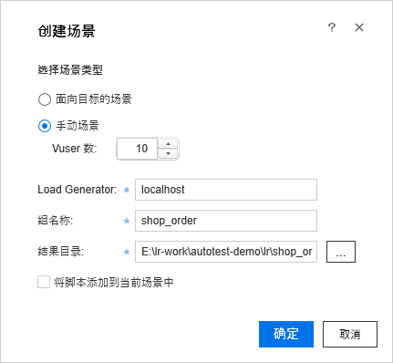
| 项目 | 填什么 |
|---|---|
| 选择场景类型 | 手动场景（16.2.3 节说两种类型的区别） |
| Vuser 数 | 10 |
| Load Generator | 保持 localhost，就是本机（16.11 节） |
| 组名称 | 保持 shop_order |
| 结果目录 | 默认是脚本目录下的 res 文件夹，先不管，16.6 节统一设置 |
| 将脚本添加到当前场景中 | 不勾。Controller 已经开着一个场景、想把脚本加进那个场景时才勾 |
- 点「确定」，Controller 启动，打开一个名叫 Scenario1 的新场景，shop_order 已经在里面，10 个虚拟用户。
这样建出来的场景带着一份默认计划：每 15 秒启动 1 个虚拟用户，全部启动后运行 5 分钟，再每 30 秒停止 1 个。16.4 节会把它改成本章要的计划。
16.2.2 从开始菜单打开 Controller¶
也可以先打开 Controller 再加脚本：开始菜单 → Micro Focus → LoadRunner → Controller。打开后先弹出「新场景」对话框：
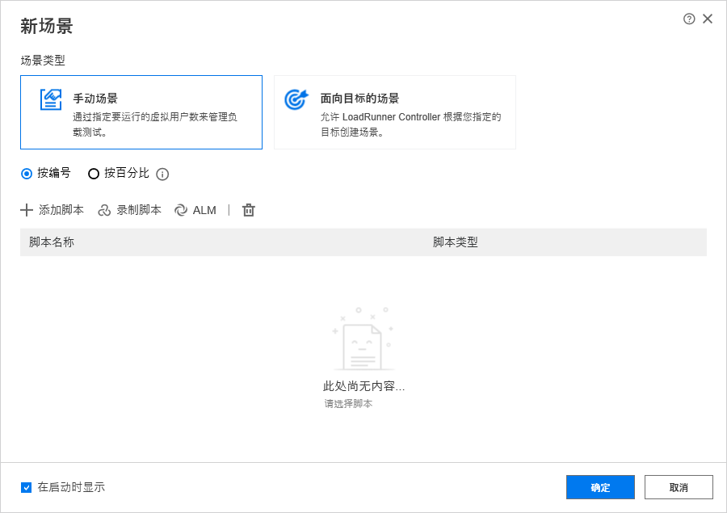
- 场景类型选「手动场景」，下面选「按编号」；
- 点「添加脚本」，弹出「添加脚本」对话框，里面列着最近用过的脚本。shop_order 在列表里就勾上它，不在就点「浏览」找到 shop_order.usr；
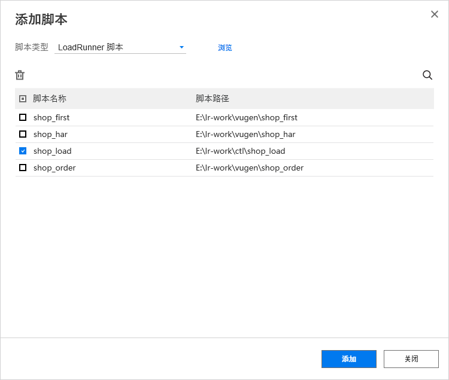
- 点「添加」，再点「确定」。
这样建的场景，每个脚本默认只有 1 个虚拟用户，计划同样是每 15 秒启动 1 个、运行 5 分钟、每 30 秒停止 1 个。虚拟用户数在 16.4.2 节改。
左下角的「在启动时显示」勾着时，每次打开 Controller 都会弹出这个对话框。
16.2.3 手动场景和面向目标的场景¶
| 类型 | 意思 |
|---|---|
| 手动场景 | 用多少个虚拟用户、什么时候启动、跑多久，都由你定。本教程只用这一种 |
| 面向目标的场景 | 给出一个目标（比如每秒点击数要达到多少），由 Controller 自己增减虚拟用户去达到它 |
手动场景的结果最好解释：压力是你设的，响应时间、每秒请求数的变化都能对上压力的变化。先把手动场景用熟。
「按编号」和「按百分比」决定虚拟用户怎么分配：按编号是每个脚本各填各的个数；按百分比是先定一个总数，再按百分比分给各个脚本，适合按真实流量比例混合几个脚本的场景。本章只有一个脚本，选按编号。
16.2.4 保存场景¶
点菜单 文件 → 另存为，存到 D:\work\autotest-demo\lr\scenarios\demo16.lrs。窗口标题会从 Scenario1 变成 demo16.lrs。
场景文件里记着脚本的完整路径、虚拟用户数、计划、运行时设置、SLA、监控，后面每改一处都记得保存（文件 → 保存）。退出 Controller 时如果有未保存的改动，会问「是否要保存对…….lrs 的变更？」。
坑
场景文件记的是脚本的完整路径。 把工程挪到别的文件夹，或者拷到另一台电脑，场景还会去原来的路径找脚本。挪了位置就在场景里删掉旧的组，重新添加脚本。
16.3 设计视图¶
建好场景后看到的是设计视图，下面是本章的场景设置完成后的样子：
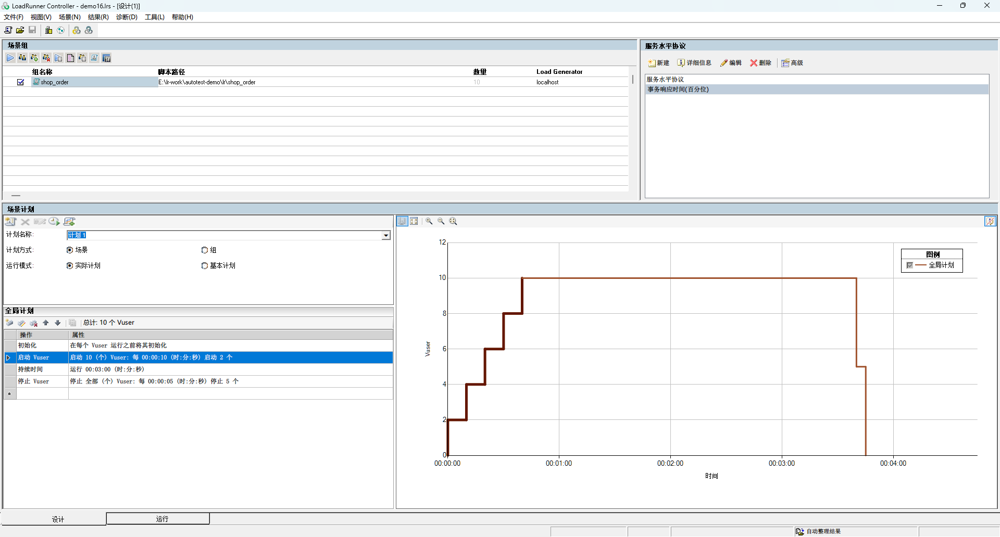
窗口分成三块，最下面的「设计」「运行」两个标签在设计视图和运行视图之间切换：
| 区域 | 位置 | 干什么 |
|---|---|---|
| 场景组 | 左上 | 场景里有哪些脚本。每个脚本是一个组，表头是 组名称、脚本路径、数量（虚拟用户数）、Load Generator；行首的勾去掉，这个组就不参加运行 |
| 服务水平协议 | 右上 | 这次压测的达标标准，也就是 SLA（16.7 节） |
| 场景计划 | 下半部分 | 虚拟用户什么时候启动、跑多久、怎么停（16.4 节）。左边是计划表，右边是按计划画出来的虚拟用户数曲线 |
场景组上方那排小按钮，从左到右依次是：开始场景、Vuser、添加组、移除组、运行时设置、参数列表、详细信息、查看脚本、Service Virtualization。把鼠标停在按钮上会显示它的名字。本章用到的是开始场景、运行时设置、详细信息。
菜单栏是 文件、视图、场景、结果、诊断、工具、帮助。本章用到的命令都在 文件、场景、结果 三个菜单里。
16.4 虚拟用户数和计划¶
16.4.1 计划由四个操作组成¶
计划表里默认有四行，每一行是一个操作：
| 操作 | 管什么 | 选项 |
|---|---|---|
| 初始化 | 什么时候执行 vuser_init（shop_order 的登录在这里） | 同时初始化所有 Vuser / 初始化 N 个 Vuser，每隔一段时间 / 在每个 Vuser 运行之前将其初始化（默认） |
| 启动 Vuser | 一共启动多少个、怎么启动 | 同时 / N 个 Vuser，每隔一段时间 |
| 持续时间 | 全部启动以后跑多久 | 完成前一直运行 / 运行时间：几天几时几分几秒 |
| 停止 Vuser | 怎么停 | 同时 / N 个 Vuser，每隔一段时间 |
初始化保持默认就好：每个虚拟用户启动前才登录，登录请求随着加压分散开。选「同时初始化所有 Vuser」，所有用户会在一开始一起登录，登录接口要承受一个瞬间的高峰。
选中计划表的某一行，点计划表上方左数第二个按钮「编辑操作」（双击这一行也可以），打开「编辑操作」对话框。下面是启动 Vuser 的对话框：
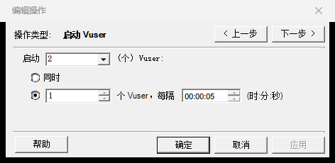
对话框右上角的「上一步」「下一步」在四个操作之间切换。改了某一项以后，这两个按钮会变灰，点「应用」后才能接着切换；全部改完点「确定」。
16.4.2 设成本章的计划¶
本章的计划：
| 操作 | 设置 | 在计划表里显示为 |
|---|---|---|
| 初始化 | 保持默认 | 在每个 Vuser 运行之前将其初始化 |
| 启动 Vuser | 启动 10 个，2 个 Vuser，每隔 00:00:10 | 启动 10 (个) Vuser: 每 00:00:10 (时:分:秒) 启动 2 个 |
| 持续时间 | 运行时间 0 天 00:03:00 | 运行 00:03:00 (时:分:秒) |
| 停止 Vuser | 停止全部，5 个 Vuser，每隔 00:00:05 | 停止 全部 (个) Vuser: 每 00:00:05 (时:分:秒) 停止 5 个 |
从 VuGen 建的场景，启动 Vuser 已经是 10 个，只要改「每隔」那一行。从开始菜单建的场景只有 1 个，先把启动 Vuser 对话框里「启动」那一格改成 10，点「应用」，场景组表格里的数量也跟着变成 10。
改完看计划表上方的「总计: 10 个 Vuser」和右边的计划图：40 秒时加满 10 个，一直保持到 3 分 40 秒，然后 5 秒内分两批降到 0。
计划区上面还有三个选项，保持默认：
| 选项 | 默认 | 另一个选项是什么意思 |
|---|---|---|
| 计划名称 | 计划 1 | 一个场景可以存几份计划，用下拉框切换 |
| 计划方式 | 场景 | 选「组」时每个组各有一份计划，比如一个脚本先跑、另一个脚本过 5 分钟再加进来 |
| 运行模式 | 实际计划 | 「基本计划」只有启动、持续、停止各一步；实际计划可以添加更多操作，模拟一天里压力起起落落 |
16.4.3 阶梯加压不用加操作¶
第 13 章 13.3 节说过，压力测试要一直加压到出现拐点；找拐点时一档一档地加，每一档保持一段时间。初学者容易想到在计划表里连着加几个「启动 Vuser」操作，可实际试一下（想自己试，先 文件 → 另存为 一份别的名字再试，别改坏 demo16）：在持续时间后面再加一个「同时启动 2 个」（计划表上方的「以下操作后添加操作」按钮），计划图上会出现红色虚线，下面报一行警告：
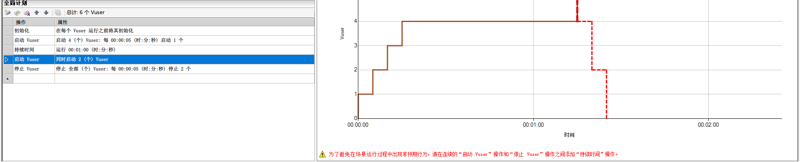
说明
为了避免在场景运行过程中出现非预期行为，请在连续的"启动 Vuser"操作和"停止 Vuser"操作之间添加"持续时间"操作。
而且实测加完以后，前一个启动 Vuser 的人数和组的数量都被自动改了，这时就很难说清场景到底会怎么跑。
阶梯加压用一个启动 Vuser 就够了：比如「启动 50 个，10 个 Vuser，每隔 00:01:00」，就是每分钟加 10 个，每一档保持 1 分钟，最后一档的时间由持续时间决定。第 18 章找拐点用的就是这个计划。
16.4.4 第 13 章的测试类型怎么配¶
第 13 章 13.3 节列了几种测试类型，在 Controller 里主要是计划不一样：
| 类型 | 启动 Vuser | 持续时间 | 其他 | 本教程的例子 |
|---|---|---|---|---|
| 基准测试 | 1～5 个，同时或很快加满 | 5～10 分钟 | ||
| 负载测试 | 逐步加到预期峰值对应的人数 | 30 分钟以上 | 本章 demo16 是一个缩小的负载测试 | |
| 压力测试 | 每隔一段时间加一档，加到出现拐点 | 最后一档保持一段时间 | 第 18 章找拐点 | |
| 尖峰测试 | 同时 | 较短 | 在一段平稳压力上突然加人，可以用组计划叠一个组 | |
| 稳定性测试 | 逐步加到正常压力 | 几小时到几十小时 | 同时监控内存 | 第 18 章跑 30 分钟 |
| 并发测试 | 同时 | 完成前一直运行 | 脚本里放集合点（第 15 章 15.7 节） | 第 18 章并发支付 |
| 容量测试 | 同负载测试 | 同负载测试 | 先把数据量造上去 |
16.5 运行时设置¶
16.5.1 场景里有自己的一份¶
场景组上方的「运行时设置」按钮打开的窗口，和 VuGen 里的运行时设置页面一样（第 15 章 15.6 节）。改完点右下角的「保存」，再关掉窗口。
要注意的是：脚本加进场景时，场景复制了一份运行时设置，之后两边各管各的。 在 VuGen 里改脚本的运行时设置，已经建好的场景不受影响；在 Controller 里改，也不会改到脚本。而且这一份的几个默认值和 VuGen 里不一样：
| 设置 | VuGen 回放 | 场景里 |
|---|---|---|
| 思考时间 | 忽略思考时间 | 按录制参数回放思考时间 |
| 日志 → 发送消息 | 始终 | 出错时记录并将日志缓存限制为 1 KB |
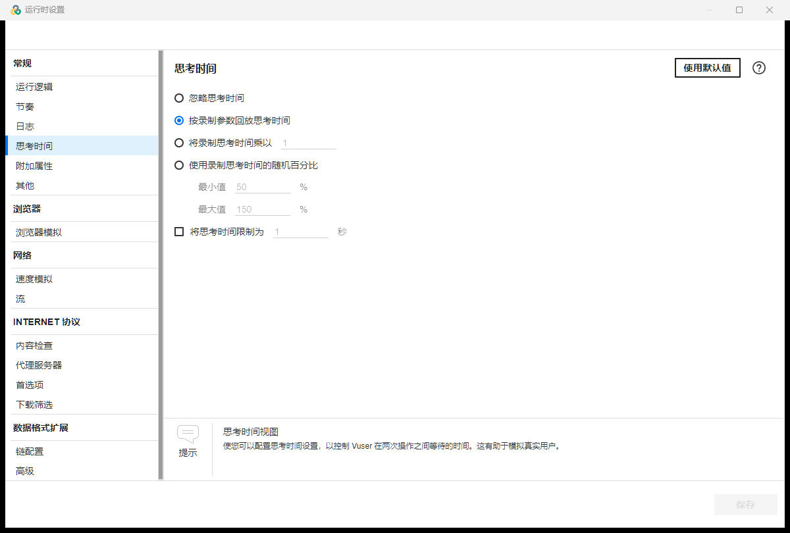
本章的场景就用默认的「按录制参数回放思考时间」：shop_order 里三处 lr_think_time(1)，每次迭代停 3 秒，更接近真人，16.9 节核对数字时会用到这 3 秒。
日志只在出错时写，是为了省资源：每个虚拟用户先把日志放在一个 1 KB 的缓存里，出错时才把缓存里出错前的几行连同错误一起写出来，写到结果目录的 log 文件夹，一个虚拟用户一个文件。几十个用户一直写完整日志，压测机的磁盘会成为额外的负担，测出来的数字也会受影响。没出错时 log 文件夹是空的。
「其他」页里「将每个操作定义为一个事务」默认是勾着的，所以运行结果里除了你写的四个事务，还会多出 vuser_init_Transaction、Action_Transaction、vuser_end_Transaction，分别是三个操作各自的耗时。
16.5.2 刷新¶
场景组上方的「详细信息」按钮打开「组信息」对话框，右边的「刷新」按钮有两项：
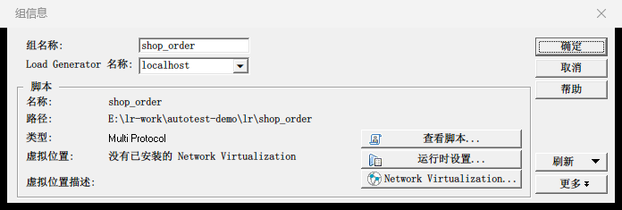
点「刷新」右边的小三角，弹出两项：
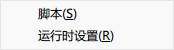
| 刷新项 | 什么时候用 |
|---|---|
| 脚本 | 在 VuGen 里改了脚本（加了事务、加了参数）以后，让场景重新读一遍脚本，提示「已成功刷新脚本。」 |
| 运行时设置 | 放弃场景里的这一份，重新复制脚本自己的运行时设置，提示「已成功刷新运行时设置。」 |
坑
刷新运行时设置以后，思考时间变成了忽略。 刷新是把脚本自己的设置原样复制过来，而脚本的思考时间是 VuGen 的默认值「忽略」。刷新以后要重新检查思考时间。
16.6 结果设置¶
点菜单 结果 → 结果设置：
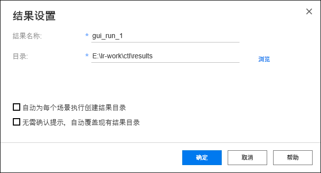
| 项目 | 填什么 |
|---|---|
| 结果名称 | demo16 |
| 目录 | D:\work\lr-results |
| 自动为每个场景执行创建结果目录 | 先不勾 |
| 无需确认提示，自动覆盖现有结果目录 | 不勾 |
结果会放在「目录」下以结果名称命名的文件夹里，也就是 D:\work\lr-results\demo16。
坑
结果默认放在不好找的地方。 不设置的话，从开始菜单新建的场景，结果目录默认是临时文件夹下的 res（C:\Users\你的用户名\AppData\Local\Temp\res）；从 VuGen 建的场景，默认是脚本目录下的 res（16.2.1 节）。跑完不好找，几个场景的结果还会挤在同一个地方，放在脚本目录里还会混进工程。每个场景都先设好结果名称和目录。
16.7 SLA¶
第 13 章 13.4 节的目标表里，搜索的 P95 不超过 300 毫秒，下单、支付不超过 500 毫秒。把它写进场景的 SLA，跑完 Analysis 会自动对照、给出达标与否（第 17 章）。
- 在右上角服务水平协议窗格里点「新建」，弹出「服务水平协议 - 目标定义」向导，左边是五个步骤：开始、度量、事务、阈值、完成。开始页是一段说明，点「下一步」；
- 度量页选「事务响应时间」，右边的下拉框选「百分位」：
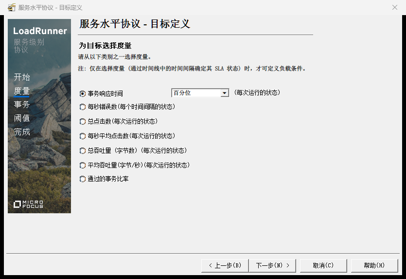
- 事务页把 02_search、03_order、04_pay 从左边的「可用事务」移到右边的「选定事务」（选中后点中间的箭头）：
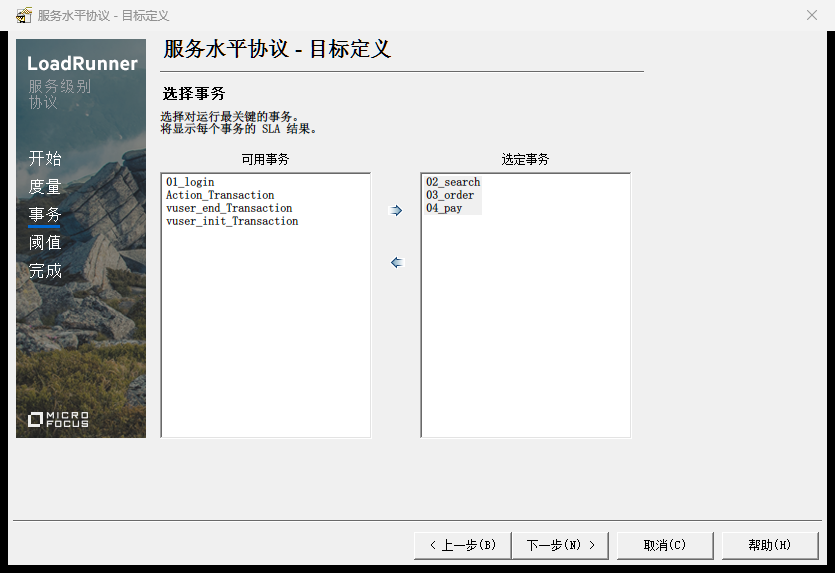
- 阈值页的「百分位」改成 95，在下面的表格里给每个事务填阈值（单位是秒）：02_search 填 0.3，03_order、04_pay 填 0.5。上面的「提供所有事务的阈值」配合「应用到全部」可以一次给所有事务填同一个值：
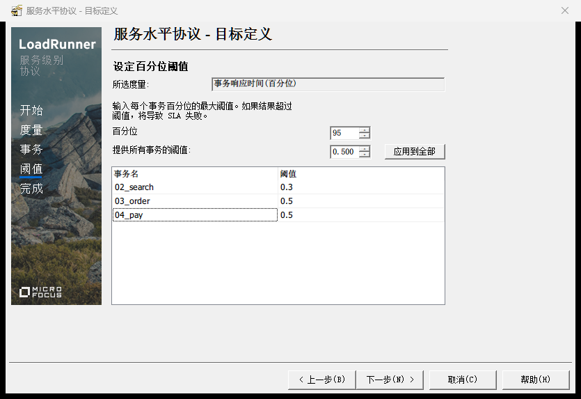
- 点「下一步」，完成页显示「已成功定义 SLA。」，点「完成」。
服务水平协议窗格里多出一行「事务响应时间(百分位)」，选中它点「编辑」可以改。
坑
可用事务里只有 Action_Transaction 这类自动事务。 Controller 只从 .usr 文件里的事务清单认事务。脚本是在 VuGen 外面改的（比如用 VS Code 加了一个事务），或者 .usr 是别人手写的，清单里就没有你的事务，向导里只看得到 vuser_init_Transaction、Action_Transaction、vuser_end_Transaction。在 VuGen 里打开脚本保存一次，再回到 Controller，组信息 → 刷新 → 脚本，向导里就有了。
SLA 只是评判标准，不影响运行：运行时就算超了阈值，场景也照常跑完。
16.8 监控服务器资源¶
压测时除了看响应时间，还要看服务器忙不忙。Controller 能在运行的同时采集服务器的 CPU、内存等计数器（Windows 自带的性能指标，任务管理器、性能监视器里看到的 CPU 使用率就来自它们），和压测数据放在一起。本例的服务器就是本机，监控本机的 CPU：
- 点窗口底部的「运行」标签，切到运行视图（16.9 节细讲）；
- 左边图的列表拉到最下面，在「系统资源图」下勾上「Windows 资源」，右边多出一张「Windows 资源 - 最后 60 秒」的图，中间有一个「添加度量」按钮：
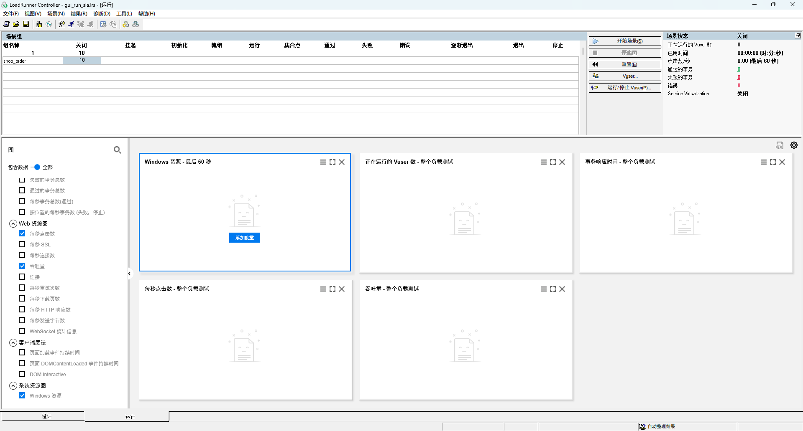
- 点「添加度量」，弹出「Windows 资源」对话框。点上半部分「监控的服务器计算机」下的「添加」，弹出「添加计算机」对话框，名称填 localhost，平台保持 Windows，确定。这时下面的资源度量列表是空的；
- 点下半部分的「添加」，弹出计数器对话框：对象选 Processor，计数器选 % Processor Time，实例选 _Total，点「添加」，再点「关闭」：
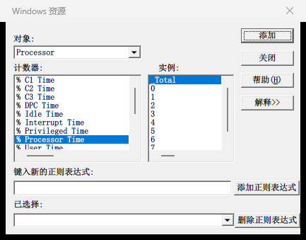
- 列表里出现「% Processor Time (Processor _Total)」，选中它，下面的「资源度量描述」会解释这个计数器的含义。点「确定」：
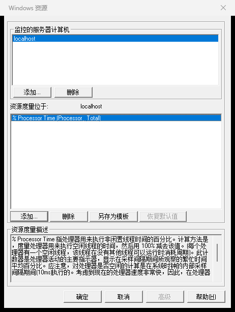
- 回到设计视图，保存场景。监控设置也存在场景文件里。
% Processor Time 的 _Total 是整台电脑所有 CPU 核的平均使用率。它统计的是整台电脑，练习网站和发压的虚拟用户都在这台电脑上，所以这里看到的主要是两者加起来的 CPU。实际项目里服务器是另一台机器，要在「添加计算机」里填服务器的名字或 IP，还要有对方的访问权限；Linux 服务器用的是别的监控方式，一般看公司现成的监控平台。
16.9 运行场景¶
16.9.1 开始¶
确认练习网站在运行，保存场景，然后点场景组上方的「开始场景」（或者菜单 场景 → 启动，快捷键 F5）。Controller 自动切到运行视图，虚拟用户按计划一批批启动。下面是运行到 2 分 12 秒时的样子：
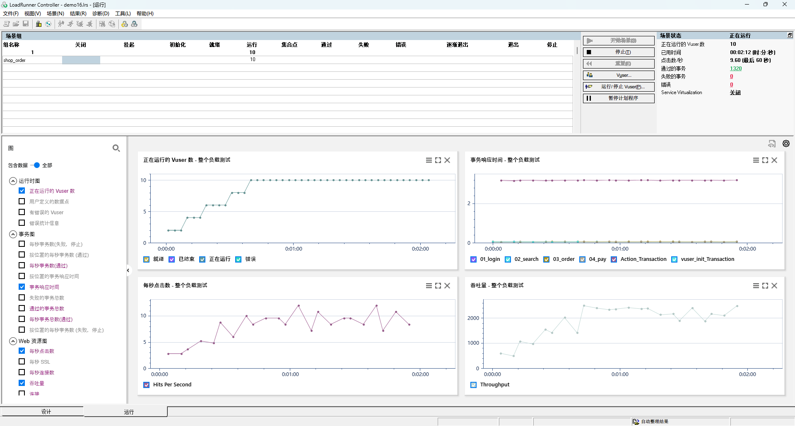
16.9.2 运行视图¶
上半部分左边是场景组，每个组一行，列是虚拟用户的各种状态：关闭、挂起、初始化、就绪、运行、集合点、通过、失败、错误、逐渐退出、退出、停止。每一格是处在这个状态的用户数，加压时「运行」列的数字一点点变大。
中间一列按钮：开始场景、停止、重置、Vuser、运行/停止 Vuser、暂停计划程序。
右边是场景状态：
| 项目 | 2 分 12 秒时 | 意思 |
|---|---|---|
| 场景状态 | 正在运行 | 跑完变成「关闭」 |
| 正在运行的 Vuser 数 | 10 | |
| 已用时间 | 00:02:12 | |
| 点击数/秒 | 9.60（最后 60 秒） | 最近 60 秒平均每秒发出的 HTTP 请求数 |
| 通过的事务 | 1320 | 包括自动事务（16.5.1 节） |
| 失败的事务 | 0 | |
| 错误 | 0 |
下半部分是运行时的图。左边是图的列表，勾上哪张就显示哪张；默认显示四张：正在运行的 Vuser 数、事务响应时间、每秒点击数、吞吐量，标题后面都带着「整个负载测试」。
看事务响应时间那张图会发现：02_search、03_order、04_pay 都贴着横轴，Action_Transaction 却在 3.2 秒左右。Action_Transaction 是整个 Action 的耗时，三次 1 秒的思考时间也算在里面了。Analysis 默认会扣掉思考时间（第 17 章），在那里它只有 0.16 秒左右。
点「Vuser」按钮打开 Vuser 对话框，能看到每个虚拟用户的状态和已经跑了多久。选中某个用户，可以单独停止它，或者点「详细信息」看它的情况：
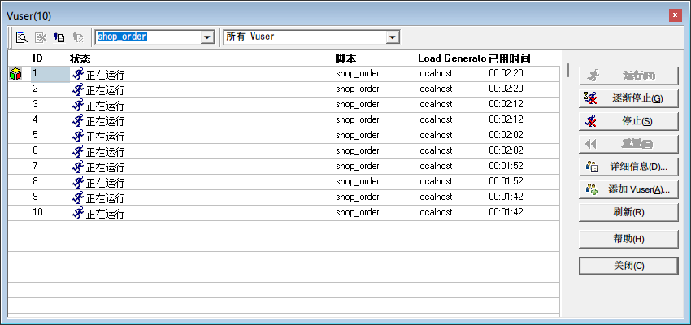
16.9.3 跑完¶
3 分 49 秒时场景结束，场景状态变成「关闭」：
| 项目 | 结束时 |
|---|---|
| 已用时间 | 00:03:49 |
| 通过的事务 | 2598 |
| 失败的事务 | 0 |
| 错误 | 0 |
| 场景组的「停止」列 | 10 |
10 个用户都在「停止」列：按时间跑的场景，用户是到点被计划停下的。第 18 章「完成前一直运行」的场景里，用户跑完自己的迭代就结束，会显示在「通过」列。
通过的事务 2598 是怎么来的：每个用户登录一次，共 10 次 01_login，vuser_init_Transaction、vuser_end_Transaction 也各 10 次；每次迭代有 02_search、03_order、04_pay、Action_Transaction 四个事务，一共跑了 642 次迭代：
642 × 4 + 10 × 3 = 2598
状态栏右下角显示着「自动整理结果」：运行结束后，Controller 会自动把各个 Load Generator 上的数据收集到结果目录，这一步叫整理结果。
16.9.4 用利特尔法则核对¶
第 13 章 13.2.6 节的公式：
每秒请求数 ≈ 并发用户数 ÷（响应时间 + 思考时间）
拿本章的场景算一下。一次迭代里搜索、下单、支付三个请求，第 17 章会在 Analysis 里看到它们平均各约 0.053 秒，加起来约 0.16 秒；思考时间 3 秒。10 个用户：
每秒迭代次数 ≈ 10 ÷ (0.16 + 3) ≈ 3.16
每秒请求数 ≈ 3.16 × 3 ≈ 9.5
运行视图里满载时的点击数/秒是 9.60，对得上。第 17 章按时间段统计，10 个用户都在跑的那段时间，每个业务事务每秒完成 3.13～3.15 次，也和 3.16 对得上。
能对上，说明场景是按设计在跑的。对不上就要先找原因再看结果，常见的是思考时间的设置和你以为的不一样（16.5 节），或者有用户在报错、迭代提前结束了。
这个公式还说明了：10 个用户、每次迭代停 3 秒，每秒只有 9.5 个请求，对服务器几乎没有压力。想加大压力，要么加用户，要么减思考时间。第 18 章找拐点时把思考时间乘以 0.1，同样 10 个用户每秒请求数到了 60 左右。
16.9.5 什么时候该手动停¶
场景会按计划自己结束。运行中出现下面的情况，就点「停止」，查清原因再重跑：
- 失败的事务、错误的数字一直在涨。比如练习网站没启动，所有请求都会失败，跑下去没有意义；
- 响应时间成倍上涨，并且还在往上走，已经远远超出了目标；
- 压测机自己的 CPU 一直在 100% 附近，这时测出来的是压测机的瓶颈（第 13 章 13.7 节）。
16.10 结果目录¶
跑完到 D:\work\lr-results\demo16 里看看，主要有这些：
| 文件 | 是什么 |
|---|---|
| demo16.lrr | 结果文件，Analysis 打开的就是它 |
| 扩展名 .eve、.map 的文件 | 原始运行数据 |
| SqliteDb.db | Controller 运行时的输出消息，比如脚本里 lr_error_message 写的错误 |
| log 文件夹 | 虚拟用户的日志，按 16.5.1 节的设置只在出错时写，没出错就是空的 |
| SLAConfiguration.xml | 这次运行用的 SLA |
| shop_order.cfg、shop_order.usp | 这次运行用的运行时设置 |
本章的结果目录大约 1 MB。
点菜单 结果 → 分析结果，会用 Analysis 打开这次的结果，下一章就从这里开始。
16.11 Load Generator¶
Load Generator（负载生成器）是真正运行虚拟用户、发出请求的机器，第 13 章 13.5.2 节介绍过。点菜单 场景 → Load Generator 能看到列表：
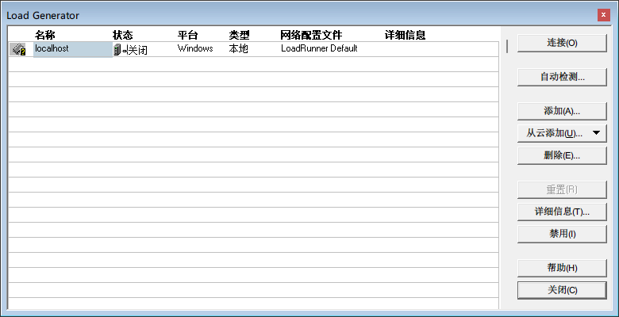
| 列 | 说明 |
|---|---|
| 名称 | localhost 就是本机，装 LoadRunner 时一起装好的 |
| 状态 | 没有运行场景时显示「关闭」 |
| 平台、类型 | Windows、本地 |
一台电脑能模拟的虚拟用户有上限，CPU、内存、网络先用完的那一样决定了上限。人数多了就要加机器：在别的电脑上安装 LoadRunner 的 Load Generator 组件，再在这里点「添加」，填那台电脑的名字或 IP。场景组的 Load Generator 一列选哪台，这个组的虚拟用户就在哪台上运行。
社区版自带的许可是 50 个虚拟用户，本教程所有场景都在一台电脑上完成，没有用到远程的 Load Generator。
16.12 命令行运行场景¶
不用在 Controller 里手动操作，也能用命令行运行一个场景，用的是安装目录 bin 下的 Wlrun.exe（Controller 程序本身）。先把开着的 Controller 保存好场景、关掉，再在 PowerShell 里执行：
> $p = Start-Process "$env:LR_PATH\bin\Wlrun.exe" -ArgumentList "-TestPath", "D:\work\autotest-demo\lr\scenarios\demo16.lrs", "-ResultName", "D:\work\lr-results\demo16_cli", "-Run" -PassThru
> $p.WaitForExit(); $p.ExitCode
0
| 写法 | 意思 |
|---|---|
-TestPath |
场景文件的完整路径 |
-ResultName |
结果目录的完整路径，盖过场景里的结果设置 |
-Run |
打开场景后马上运行，跑完自动退出 |
运行时 Controller 的窗口会最大化弹出来，直接显示运行视图，跑完自动关闭。2 个用户、持续 60 秒的场景，从启动到退出实测 83～87 秒，多出来的时间用在打开场景、加压减压、整理结果上。
这里没有像第 15 章运行 mdrv.exe 那样给 Start-Process 加 -Wait。-Wait 会把 Wlrun.exe 启动的子进程也一起等完，实测同一个场景要 150 秒才返回，比 Wlrun.exe 本身多等了一分钟左右。先用 -PassThru 拿到进程，再用 WaitForExit() 只等 Wlrun.exe 本身。
坑
结果目录已经存在时，会被直接覆盖。 实测 -ResultName 指向一个已有的结果目录时，不提示，直接覆盖上一次的结果。要保留历史结果，每次换一个名字，比如带上日期时间：把 -ResultName 后面的路径写成 "D:\work\lr-results\demo16_$(Get-Date -Format yyyyMMdd_HHmm)"。
坑
退出码说明不了业务结果。 实测场景里有大量事务失败、错误时，Wlrun.exe 的退出码仍然是 0（第 18 章 18.5 节：一千多个事务失败的那次和全部通过的那次，退出码都是 0）。和第 15 章 15.9.5 节的 mdrv.exe 一样，命令行跑完还要检查结果：第 17 章会讲怎么把结果导出成数据，用脚本判断事务有没有失败、有没有超过 SLA。
16.13 常见的坑¶
| 现象 | 原因与解决 |
|---|---|
| SLA 向导的可用事务里只有 vuser_init_Transaction、Action_Transaction、vuser_end_Transaction | .usr 里没有事务清单。在 VuGen 里打开脚本保存一次，再 组信息 → 刷新 → 脚本（16.7 节） |
| 在 VuGen 里改了思考时间，场景里没变 | 场景有自己的一份运行时设置。在 Controller 里改，或者 组信息 → 刷新 → 运行时设置（16.5 节） |
| 刷新运行时设置以后，每秒请求数突然大了很多 | 刷新把思考时间改回了脚本的「忽略」。重新设置思考时间 |
| 运行视图里 Action_Transaction 要 3 秒多，单个接口却只要几十毫秒 | Action_Transaction 包含了思考时间。看业务事务，或者到 Analysis 里看扣掉思考时间的数字 |
| 每秒请求数比估算的低很多 | 在 VuGen 里回放时思考时间被忽略了，场景里默认按录制参数回放。用利特尔法则按实际的思考时间重算 |
| 跑完找不到结果 | 没设结果目录，结果放在了临时文件夹或脚本目录下的 res 里。每个场景先设好结果名称和目录（16.6 节） |
| 计划图里出现红色虚线和警告 | 连着两个启动 Vuser 中间没有持续时间。阶梯加压用一个启动 Vuser 的「每隔一段时间启动几个」就够了（16.4.3 节） |
| 编辑操作里改了一项以后，「上一步」「下一步」变灰了 | 改动还没应用。点「应用」以后就能切到别的操作了 |
| 持续时间选「完成前一直运行」，点确定时提示「计划程序操作将被移除」 | 选了这一项，后面的停止 Vuser 就用不上了，会被删掉。点「是」 |
| 用户都在报 401 | 多个用户用了同一个账号，账号参数的「选择下一行」不是「唯一」（第 15 章 15.5.3 节），第 18 章有实测 |
| 命令行跑完退出码是 0，可事务失败了一大半 | Wlrun.exe 的退出码不反映事务结果，要分析结果（第 17 章） |
| 命令行又跑了一次，上一次的结果没了 | -ResultName 指向已有的目录时直接覆盖、不提示。每次用不同的结果名（16.12 节） |
| PowerShell 里的命令半天才返回，Controller 窗口早就关了 | Start-Process 加了 -Wait，它连子进程一起等。改用 -PassThru 加 WaitForExit()（16.12 节） |
| 工程挪了位置，场景打开就报找不到脚本 | 场景记的是脚本的完整路径。删掉旧的组，重新添加脚本 |
16.14 练习¶
- 把 demo16 另存为 demo16_nothink，结果名称改成 demo16_nothink（结果 → 结果设置），思考时间改成「忽略思考时间」，持续时间改成 1 分钟，其他不变。运行前先用利特尔法则估一下每秒请求数（一次迭代的请求按 0.16 秒算），再和运行视图里的点击数/秒比较。数字差得多的话，看看事务响应时间那张图，想一想为什么（第 18 章会解答）。做完重启练习网站：没有思考时间时下单很快，前几个账号的余额会花掉不少。
- 把 demo16 另存为 demo16_at_once，结果名称也改成 demo16_at_once，启动 Vuser 改成「同时」，持续 1 分钟，运行后对比计划图和运行视图里正在运行的 Vuser 数那张图，两条曲线的形状有什么不同。
- 在 Windows 资源监控里再加一个计数器：对象 Memory、计数器 Available MBytes（可用内存）。运行时看它的变化。
- 用 16.12 节的命令在 PowerShell 里运行 demo16，结果名用 demo16_cli，记下退出码。再把练习网站停掉，结果名换成 demo16_down，重新运行，看看退出码是多少、结果目录的 log 文件夹里写了什么。看完把练习网站启动起来。
- 运行场景前打开 场景 → Load Generator，记下 localhost 的状态；运行到一半再打开一次，看状态有什么变化。
16.15 自检清单¶
- 会从 VuGen 和开始菜单两种方式新建场景，知道手动场景和面向目标的场景的区别；
- 能说出设计视图里场景组、场景计划、服务水平协议各管什么；
- 会用编辑操作设置初始化、启动、持续时间、停止，知道阶梯加压为什么只用一个启动 Vuser；
- 能说出负载测试、压力测试、稳定性测试、并发测试的计划各怎么配；
- 知道场景里的运行时设置是单独的一份，知道思考时间、日志的默认值和 VuGen 的区别，知道刷新运行时设置的副作用；
- 会设置结果名称和目录，知道结果目录里有哪些东西；
- 会用向导设置按百分位的 SLA，知道可用事务里缺事务时怎么办；
- 会添加 Windows 资源监控，知道本机监控看到的 CPU 包含了哪些进程；
- 看得懂运行视图的场景状态和默认的四张图，能用利特尔法则核对每秒请求数；
- 知道 Load Generator 的作用，会用 Wlrun.exe 在命令行运行场景，知道它的退出码说明不了业务结果。